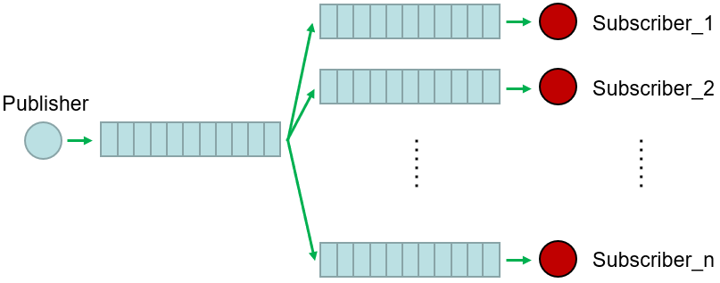

实例—PX4降落移动平台¶
实例背景及来源参见 PX4降落移动平台
一、ROS 与 MAVROS 基础概念¶
ROS 节点（Node）¶
ROS 中的基本执行单元。每一个运行的可执行程序都称作一个节点。节点通过 ROS Master 注册并发现彼此，可以进行消息通信、服务调用等。
需要在程序入口处调用 ros::init(argc, argv, "node_name") 来初始化节点，并创建一个或多个 ros::NodeHandle 作为与 ROS 系统交互的句柄。
消息（Message）与话题（Topic）¶
各节点通过“发布（publish）/订阅（subscribe）”机制进行异步、一对多或多对一的数据传递。消息类型由 .msg 定义，对应 C++ 中的结构体类型。
订阅者通过 nh.subscribe(topic_name, queue_size, callback) 注册回调；发布者通过 nh.advertise<MsgType>(topic_name, queue_size) 创建发布者，再调用 .publish(msg) 发送。

Q：这里的
queue_size是什么？A：订阅者/发布者消息队列的大小。
Q：为什么存在这两个队列？设计目的是什么？
A：首先，这两个队列都是用来存放消息的，先进先出，满了之后接收新的放弃旧的。简而言之，队列可实现消息发布与接收的解耦。通过发布者队列，ROS 系统能实现异步通信、一对多的消息发布，防止接收方接收速度过慢造成消息阻塞。订阅者队列作用类似，可以降低订阅者从发布者队列中读取消息的时间开销的影响。
服务（Service）与客户端（ServiceClient）¶
参见 服务（Service）
回调函数 （Callback）¶
当有新消息到达订阅的话题时，ROS 库会自动在后台线程或事件循环中调用用户提供的回调函数，传入消息指针。
回调签名通常是 void callback(const MsgType::ConstPtr& msg) 或者 void callback(const boost::shared_ptr<const MsgType>& msg)。
ROS 信息打印¶
参见 日志宏
MAVROS¶
MAVROS 是 ROS 与飞控（例如 PX4、ArduPilot）之间的桥梁，提供主题与服务接口操作无人机的飞行模式、任务(waypoint)管理、姿态/位置信息等。
本代码中使用的 MAVROS 消息类型：
mavros_msgs::WaypointList：包含当前上传到飞控的航点列表，其成员通常包括.waypoints，是一个std::vector<mavros_msgs::Waypoint>。mavros_msgs::WaypointPush：用于将一组航点上传(push)到飞控。Service 类型，包含request.waypoints和response...等字段。
注意事项 ：保持节点运行¶
在 main 函数订阅、创建服务客户端等后，必须让程序保持运行状态才能响应回调，通常通过 ros::spin() 或循环 + ros::spinOnce()。如果缺失，程序会立即退出，无法处理消息/服务。
ros::spin()的功能是进入一个无限循环，线程被阻塞，不会返回；在循环内不断检查并处理 callback queue 中的待处理回调，直到节点被关闭。ros::spinOnce()的功能是处理一次当前 callback queue 中的所有待处理回调，然后立即返回，不阻塞等待新回调。
二、逐行/逐块代码解析¶
下面按代码顺序，一行行说明。为了易于阅读，先贴原代码，然后分段注释。
#include <geometry_msgs/PoseStamped.h>
#include <mavros_msgs/WaypointList.h>
#include <mavros_msgs/WaypointPush.h>
ros::ServiceClient wp_push_client;
mavros_msgs::WaypointList current_wps;
void targetCallback(const geometry_msgs::PoseStamped::ConstPtr& msg)
{
if (current_wps.waypoints.empty()) {
return;
}
auto& land_wp = current_wps.waypoints.back();
land_wp.x_lat = msg->pose.position.x();
land_wp.y_long = msg->pose.position.y();
land_wp.z_alt = msg->pose.position.z();
mavros_msgs::WaypointPush push_srv;
push_srv.request.waypoints = current_wps.waypoints;
if (wp_push_client.call(push_srv)) {
ROS_INFO("Landing point updated to (%.6f, %.6f, %.2f)",
land_wp.x_lat, land_wp.y_long, land_wp.z_alt);
} else {
ROS_ERROR("Waypoint update failed");
}
}
void wpListCallback(const mavros_msgs::WaypointList::ConstPtr& msg)
{
current_wps = *msg;
}
int main(int argc, char** argv)
{
ros::init(argc, argv, "dynamic_landing_node");
ros::NodeHandler nh;
wp_push_client = nh.serviceClient<mavros_msgs::WaypointPush>("mavros/mission/push");
ros::Subscriber wp_list_sub = nh.subscribe("mavros/mission/waypoints", 1, wpListCallback);
ros::Subscriber target_sub = nh.subscribe("/dynamic_landing_target", 10, targetCallback);
ros::spin();
return 0;
}
1. 头文件包含¶
#include <geometry_msgs/PoseStamped.h>
#include <mavros_msgs/WaypointList.h>
#include <mavros_msgs/WaypointPush.h>
引入 ROS 中定义的消息类型 geometry_msgs::PoseStamped。该消息包含一个 std_msgs/Header header（包括时间戳、坐标系帧ID等）和一个 geometry_msgs::Pose pose（包括位置 position 和姿态 orientation）。适用于发布或接收带时间戳和坐标系标识的位姿（position+orientation）消息。
引入了 MAVROS 中用于表示航点列表的消息类型 mavros_msgs::WaypointList。主要成员通常有：std::vector<mavros_msgs::Waypoint> waypoints; 。订阅 mavros/mission/waypoints 话题可以获取当前飞控上存储的所有航点。
引入了 MAVROS 中表示“将一组航点上传(push)到飞控”的 Service 类型。Service 名称是 mavros/mission/push。
2. 全局变量¶
声明了一个全局 ServiceClient 变量，用于后面在 main 中初始化：wp_push_client = nh.serviceClient<mavros_msgs::WaypointPush>("mavros/mission/push");
之所以作为全局，是为了回调
targetCallback中也能访问到，直接调用服务上传更新后的航点列表。
mavros_msgs::WaypointList current_wps; 存储当前从飞控获取到的航点列表。由回调 wpListCallback 更新。初始时默认空。只有当收到订阅的话题消息后，current_wps.waypoints 才会被赋值。
3. targetCallback 函数¶
void targetCallback(const geometry_msgs::PoseStamped::ConstPtr& msg)
{
if (current_wps.waypoints.empty()) {
return;
}
auto& land_wp = current_wps.waypoints.back();
land_wp.x_lat = msg->pose.position.x;
land_wp.y_long = msg->pose.position.y;
land_wp.z_alt = msg->pose.position.z;
mavros_msgs::WaypointPush push_srv;
push_srv.request.waypoints = current_wps.waypoints;
if (wp_push_client.call(push_srv)) {
ROS_INFO("Landing point updated to (%.6f, %.6f, %.2f)",
land_wp.x_lat, land_wp.y_long, land_wp.z_alt);
} else {
ROS_ERROR("Waypoint update failed");
}
}
ConstPtr 是 ROS C++ 中对共享指针(boost::shared_ptr<const MsgType>)的简写，可避免复制且保证只读。
msg 指向发布方发送的位姿消息，包含 msg->header（时间戳 msg->header.stamp，坐标系 msg->header.frame_id）和 msg->pose（包括 msg->pose.position.{x,y,z} 以及 msg->pose.orientation.{x,y,z,w}）。
auto& land_wp = current_wps.waypoints.back(); 用 auto& 获取对该最后航点对象的引用，以便修改其字段。假设最后一个航点是“着陆点”，所以后续将其坐标替换为动态目标坐标。
4. wpListCallback 函数¶
该回调用于订阅来自 MAVROS 的航点列表消息，主题名在 main 中为 "mavros/mission/waypoints"。
签名 const mavros_msgs::WaypointList::ConstPtr& msg，表示收到的消息指针。
current_wps = *msg;：将接收到的 WaypointList 整体拷贝给全局 current_wps，以便后续在 targetCallback 中使用最新列表。
注意：如果航点列表很大且更新频繁，复制可能成本较高，但通常航点数目有限（几十个）。如有性能需求，可考虑只拷贝必要字段或使用指针/引用（但要注意生命周期）。
5. main 函数¶
int main(int argc, char** argv)
{
ros::init(argc, argv, "dynamic_landing_node");
ros::NodeHandle nh;
wp_push_client = nh.serviceClient<mavros_msgs::WaypointPush>("mavros/mission/push");
ros::Subscriber wp_list_sub = nh.subscribe("mavros/mission/waypoints", 1, wpListCallback);
ros::Subscriber target_sub = nh.subscribe("/dynamic_landing_target", 10, targetCallback);
ros::spin();
return 0;
}
int main(int argc, char** argv) 是 C++ 程序入口。ROS 要求在 main 中先调用 ros::init。
ros::init(argc, argv, "dynamic_landing_node"); 用于初始化 ROS 节点，参数 argc, argv 传递命令行参数，第三个参数是节点名称 "dynamic_landing_node"。调用后，ROS Master 知道有一个名为 dynamic_landing_node 的节点启动，后续可用 NodeHandle 与 ROS 进行通信。
ros::NodeHandle nh; 用于创建一个 NodeHandle 对象 nh。NodeHandle 是与 ROS 系统交互的主要接口，又被称为句柄。通过它可以创建 Publisher、Subscriber、ServiceClient、ServiceServer、Timer 等，并访问参数服务器（get/set param）。
wp_push_client = nh.serviceClient<mavros_msgs::WaypointPush>("mavros/mission/push"); 用于初始化全局 wp_push_client，让它引用名为 "mavros/mission/push" 的服务，该服务由 MAVROS 提供，用于向飞控上传新的航点列表。
模板参数是 Service 类型
mavros_msgs::WaypointPush。"mavros/mission/push"：具体服务名需与 MAVROS 中 remap 或实际启动时提供的名称一致。
ros::Subscriber wp_list_sub = nh.subscribe("mavros/mission/waypoints", 1, wpListCallback); 用于订阅 MAVROS 发布的航点列表主题 "mavros/mission/waypoints"，消息类型由订阅回调签名推断为 mavros_msgs::WaypointList。
第二个参数
1是队列大小（queue_size）：在回调处理较慢或消息来得快时，可缓存最多 1 条消息，丢弃旧的。 第三个参数是回调函数wpListCallback，当收到新消息时调用。
ros::Subscriber target_sub = nh.subscribe("/dynamic_landing_target", 10, targetCallback); 用于订阅自定义话题 /dynamic_landing_target，队列大小为 10 ，最多保留 10 条未处理消息，消息类型为 geometry_msgs::PoseStamped（由回调签名决定）。
四、总结¶
该代码的核心目的是：当收到新的“动态着陆目标”位姿时，将原航点列表中最后一个航点（假定是着陆点）的经纬度/高度修改为新目标，并通过 MAVROS 的 WaypointPush 服务上传至飞控，使无人机能动态调整着陆位置。
关键流程：
- 订阅并保存当前飞控的航点列表 (
mavros/mission/waypoints->wpListCallback)。 - 订阅动态目标位姿 (
/dynamic_landing_target->targetCallback)。 - 在目标回调中，检查已有航点列表，修改最后一个航点字段，并调用服务上传新列表 (
mavros/mission/push)。